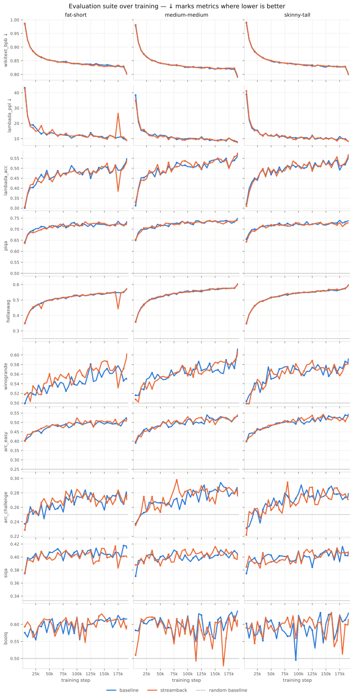
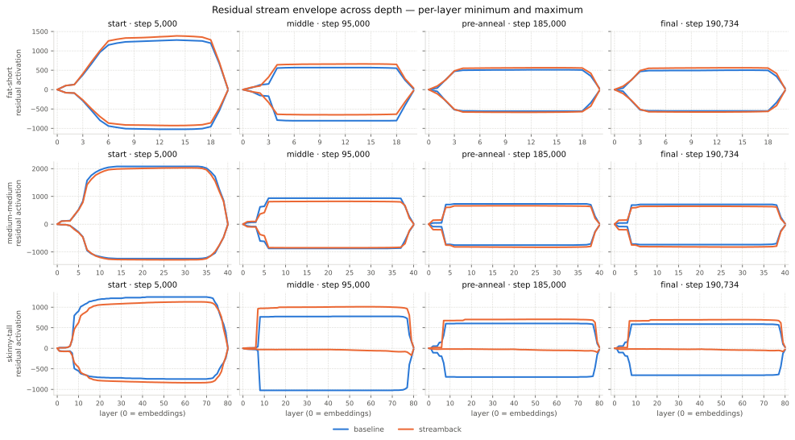
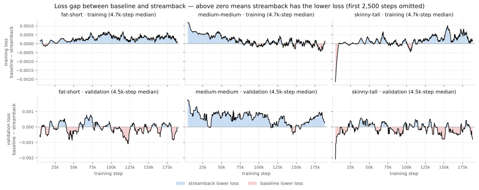

The Lost Accumulator
Motivation
Accumulators are one of the components most sensitive to quantization. If we repeat additions over and over, we can expect errors to accumulate and grow. This is even more concerning when the accumulated value falls outside the range where the precision format is dense. For example, in bfloat16 , past the value 32 the representable grid becomes coarser: within each unit interval there are only 4 representable values: 32, 32.25, 32.5, and 32.75. Any value that falls in between gets rounded to the closest one.
In a typical LLM training run there are many accumulators. The most notable ones are the weights of the model themselves: at each training step they accumulate a new gradient contribution. The same holds for the optimizer state, which accumulates the moments of the gradient. Both of these are usually kept in full precision and only quantized on the fly for the forward pass. These accumulators run for hundreds of thousands of steps, so it makes sense that they are kept in full precision.
Also Shorter-horizon accumulators are often kept in float32. When using FSDP2 , each rank processes a different batch of data and therefore produces a different gradient. All these per-rank gradients need to be accumulated into a single gradient, as if the whole forward-backward pass had been performed with a much larger batch size. This is done with an all-reduce operation, which sums the gradients across ranks and distributes the result back to all of them. I honestly do not know what the "standard" precision for this all-reduce is, but TorchTitan defaults to float32 here, which leads me to think it is probably the safer choice.
However, there is one accumulator that is not usually stored in full precision: the residual stream . The residual stream accumulates the contribution of every attention layer and every feed-forward layer as information flows through the network. On very large models with 70 or more layers, this amounts to 140 accumulations, and these may happen in bfloat16 in the common case, or even in float8 or NVFP4 in more extreme cases. The residual stream is also the path along which gradients propagate backward, so it is fair to expect it might have a meaningful impact on training.
Let's start by getting a sense of what it means to have a bfloat16 residual stream compared to a full-precision one (this is Baguettotron, by the way). In the following two figures I tracked two metrics across layers: 1) the maximum absolute error (left), and 2) the number of sign flips (right). Here, the ground truth is a full-precision model, compared against a bfloat16 model with (orange) or without (blue) a full-precision residual stream.
Let's focus on the stream's activations (left). For both models, as one would expect, the error grows with depth. However, the fp32 stream's error remains much smaller when compared to the bf16 stream. The same goes if one compares the number of sign flips (right).

Now let's look at what happens to the gradients of the parameters. The maximum absolute error is much smaller here, since gradients are generally smaller in magnitude. Still, the full-precision residual stream is consistently a bit better. If we look at the number of sign flips instead, the difference is far more stark: the full-precision residual stream has roughly half as many sign flips as the bfloat16 baseline.

This is a bit of evidence that quantizing the residual stream does affect training dynamics somewhat. That doesn't necessarily mean it is a problem, but it does seem worth investigating further.
Found Accumulator
If quantizing the residual stream to bfloat16 is a problem, then we can design a simple experiment to test this hypothesis. Let's start from a reference transformer block (Llama 3 ):
def forward(self, hidden_states, attention_masks, positions):
hidden_states = hidden_states + self.attention(
self.attention_norm(hidden_states),
attention_masks,
positions
)
hidden_states = hidden_states + self.feed_forward(
self.ffn_norm(hidden_states)
)
return hidden_states
Here the activations flow through the block in whatever dtype they start in. Quantizing them to bfloat16 right before each layer is easy, it's just a matter of .to(torch.bfloat16). The same goes for casting the output back to full precision right before it gets folded into the residual stream:
def forward(self, hidden_states, attention_masks, positions):
hidden_states = hidden_states + self.attention(
self.attention_norm(hidden_states).to(torch.bfloat16),
attention_masks,
positions
).to(torch.float32)
hidden_states = hidden_states + self.feed_forward(
self.ffn_norm(hidden_states).to(torch.bfloat16)
).to(torch.float32)
return hidden_states
I should mention that this code is only illustrative, the actual implementation also casts right after the input embedding layer and right before the output embedding layer, but otherwise this is exactly what I used. I'll call this the StreamBack block, since it casts the activations back to full precision before streaming them back into the residual stream.
I expected the StreamBack block to be more stable than the baseline architecture in general, and especially so for deeper models, where the residual stream accumulates many more contributions. To test this, I designed three Llama 3 1B variants with different depth/width trade-offs:
- Skinny-Tall Llama 3: 80 layers, 1024 hidden dimension, 16 attention heads, 4 KV heads.
- Medium-Medium Llama 3: 40 layers, 1512 hidden dimension, 16 attention heads, 4 KV heads.
- Fat-Short Llama 3: 20 layers, 2048 hidden dimension, 16 attention heads, 4 KV heads.
All three baselines were trained on 100B tokens from FineWeb with an effective batch size of 500K tokens.
To keep the comparison simple, I used a standard training recipe: AdamW with a weight decay of 0.1 and a learning rate of 4e-4. The learning rate schedule follows WSD , with 2,500 warmup steps followed by 2,500 steps of cosine decay to zero.
Overall, this gives 6 models to train: for each Llama 3 variant, one with the baseline block and one with the StreamBack block:
- Skinny-Tall-Baseline LLama 3
- Medium-Medium-Baseline LLama 3
- Fat-Short-Baseline LLama 3
- Skinny-Tall-Streamback LLama 3
- Medium-Medium-Streamback LLama 3
- Fat-Short-Streamback LLama 3
Results
Let's keep this post short and jump right to the results.

Unfortunately, there is not much to see here, the two variants behave very similarly. The only real difference is on Winogrande , where the StreamBack model performs noticeably better on the shortest variant. Apart from this one benchmark, which could well be a fluke, the two models track each other closely. Despite my expectation that the StreamBack model would come out a little ahead, this is actually good news: it means we can safely quantize the residual stream to bfloat16, at least at this scale, without any meaningful impact on downstream benchmark quality.
The next thing I expected to see is a residual stream with a different envelope (maximums and minimums). This is because a full-precision stream would be able to accumulate the small contribution of each layer, even when that contribution lands on top of a large activation. With a bfloat16 stream, this contribution would be quantized to zero on large activations, impacting gradients. Let's see if this is the case:

Once again, this is not the case. Both the fat-short and medium-medium variants have very similar reach. Interestingly, they start very large and then decrease quite a bit, though the reach remains fairly large at +500 and -500. The skinny-tall model is the outlier here, because something interesting is happening: the baseline variant behaves consistently with the other models, but the StreamBack variant does something odd. It starts with a large reach, the positive side is consistent with the other models, but the negative side collapses to a much smaller reach. I don't know whether this is caused by having a full-precision residual stream, or if it is just noise from training.
Let's also look at the loss difference between the two variants. Here I am plotting the difference between the baseline and StreamBack loss. A positive value means the StreamBack variant is performing better, a negative value means the baseline variant is performing better. On top we have the training loss, on the bottom the validation loss.

Once again, both variants perform very similarly. The difference is always bounded between -0.001 and 0.001, essentially tracing each other. The training loss for the StreamBack model is a tiny bit consistently better than the baseline, but this doesn't show up in the validation loss at all. At the end of the day, this is one more piece of evidence that a bfloat16 residual stream is robust enough to avoid any training instabilities that matter for downstream performance.
A Note on Efficiency
Keeping stream activations in float32 does amount to a substantial amount of memory to store. As a matter of fact, not too surprisingly, costs double wrt having it in bfloat16. If you are training LLMs, I am sure you've looked into ways to reduce the impact of activations, so this is definetely no good.
Yet, since we are talking of the residual stream, there are a few things we do.
Future Work
These are somewhat negative results, but there are a few ways I think this could be extended to get more insight. Unfortunately, I currently lack either the hardware or the time to test these ideas myself, so here are a couple of possible follow-ups:
It would be interesting to compare against more aggressive formats such as MXFP8 or NVFP4. We've seen that a bfloat16 residual stream is more than robust enough to avoid training instabilities that matter for downstream performance, but there might still be a measurable gap once we push to these more extreme formats.
Increasing the token horizon would increase the number of accumulations flowing through the residual stream. This could be a good way to stress-test it further, and see whether it remains robust over longer training runs.